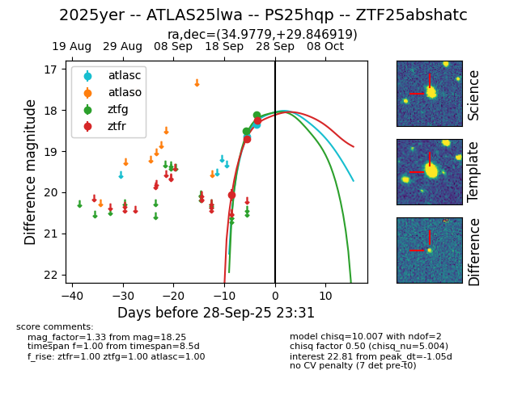
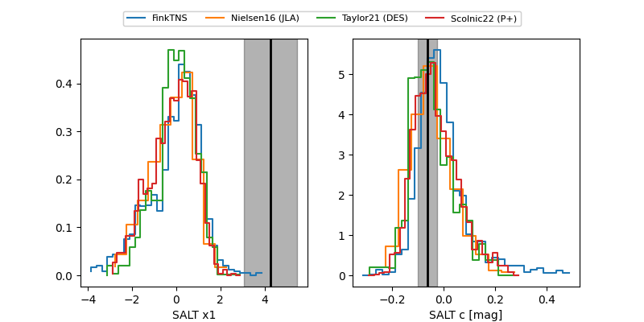

FINK: ZTF25abshatc
Lasair: ZTF25abshatc
ALeRCE: ZTF25abshatc
TNS: 2025yer
YSE: 2025yer
ZTF25abshatc (ztf,fink)
2025yer (tns,yse)
ATLAS25lwa (atlas)
PS25hqp (panstarrs)
equatorial (ra, dec) = (34.9779,+29.84692)
galactic (l, b) = (144.9069,-29.22194)


last atlasc=18.35, ztfg=18.12, ztfr=18.25
2 atlasc, 2 ztfg, 3 ztfr detections